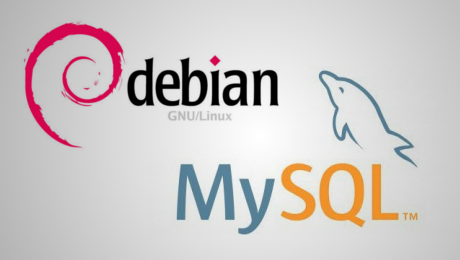

Install MySQL 5.5 on Debian Wheezy 7

This is just a quick note, as I struggled with installing not MySQL 5.6 but 5.5 on Debian Wheezy.
First, I already had MySQL 5.6 installed but no data was stored there, so backup wasn't necessary
$ sudo apt-get purge mysql*
$ sudo apt-get autoremove
$ sudo rm -r /var/lib/mysql/ /var/log/mysq* /tmp/mysql*
Normally, this should do the trick
sudo apt-get install mysql-server-5.5 mysql-client-5.5 mytop
But in my case, mylsq-server-5.5 selected mysql-common (5.